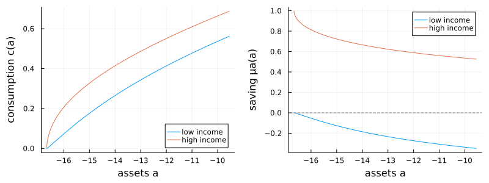

Achdou–Han–Lasry–Lions–Moll: consumption–saving with two income states
A household saves in a riskless asset $a$ at rate $r$ and earns a labor income that switches between a low value $y_l$ and a high value $y_h$ as a two-state Poisson process (intensities $\lambda_{lh}$, $\lambda_{hl}$). There is one continuous state (assets $a$) but two coupled value functions $v_l(a)$ and $v_h(a)$, one per income state, linked by the income transitions:
\[\rho\, v_j(a) = \max_c \frac{c^{1-\gamma}}{1-\gamma} + v_j'(a)\,(y_j + r a - c) + \lambda_{jk}\,\bigl(v_k(a)-v_j(a)\bigr), \qquad j \ne k.\]
A borrowing constraint $a \ge \underline a$ is enforced by preventing the asset drift from turning negative at the lower bound.
The model
The parameters live in a struct:
using EconPDEs, Plots
Base.@kwdef mutable struct AchdouHanLasryLionsMollModel_TwoStates
yl::Float64 = 0.5 # low income state
yh::Float64 = 1.5 # high income state
λlh::Float64 = 0.2 # low → high transition intensity
λhl::Float64 = 0.2 # high → low transition intensity
r::Float64 = 0.03 # risk-free rate
ρ::Float64 = 0.04 # discount rate
γ::Float64 = 2.0 # relative risk aversion
amin::Float64 = -yl / r # borrowing limit (natural limit)
amax::Float64 = 50.0 # top of the asset grid
endMain.AchdouHanLasryLionsMollModel_TwoStatesThe state space
We build the grid and the initial guess first, because they fix the names used everywhere else. The grid is a NamedTuple whose key is the single continuous state (a); the guess is a NamedTuple whose keys are the two unknown functions (vl and vh), one starting value per grid point. These names are what reappear inside the equation below — e.g. vla_up will be the forward finite difference of vl in a.
The asset grid is finer near the borrowing limit, and we start from an autarky-style guess. The borrowing limit itself is nudged just inside the natural limit $-y_l/r$ to keep consumption strictly positive there.
m = AchdouHanLasryLionsMollModel_TwoStates()
m.amin += 0.001
stategrid = (; a = m.amin .+ range(0, (m.amax - m.amin)^(1 / 2), length = 200) .^ 2)
guess = (;
vl = (m.ρ ./ m.γ .+ (1 .- 1 / m.γ) .* m.r)^(-m.γ) .* (stategrid[:a] .+ m.yl ./ m.r) .^ (1 - m.γ) ./ (1 - m.γ),
vh = (m.ρ ./ m.γ .+ (1 .- m.γ) .* m.r)^(-m.γ) .* (stategrid[:a] .+ m.yh ./ m.r) .^ (1 - m.γ) ./ (1 - m.γ),
)(vl = [-816326.5306112472, -304209.66379019007, -105553.97344587464, -50543.70120135009, -29222.416483385914, -18946.51187098101, -13251.275099772196, -9777.740130953549, -7507.156985865249, -5943.051397692311 … -13.432396085300613, -13.29211320991021, -13.154016494235172, -13.018060748058993, -12.884201942814869, -12.752397175935922, -12.622604636475304, -12.49478357194475, -12.3688942563225, -12.244897959183671], vh = [-299.991000269992, -299.9758510387842, -299.93041252401383, -299.8547122483401, -299.7487960365673, -299.61272794634107, -299.44659017139617, -299.25048291762994, -299.0245242523482, -298.7688499271064 … -106.26281374242339, -105.543474508771, -104.8301087312142, -104.12267112861927, -103.42111639223482, -102.72539920228213, -102.03547424389043, -101.35129622239745, -100.67281987803234, -100.00000000000004])The equation
We now write the function encoding the HJB equation. Following the package convention, it takes the current state (a grid point) and u (each unknown together with its finite-difference derivatives there) and returns the time derivative of each unknown.
In each income state we upwind the asset drift on its sign, capping the implied consumption rather than flooring the marginal value (Newton may try negative marginal values). At the borrowing constraint the drift is set to zero. We save consumption cl, ch to plot.
function (m::AchdouHanLasryLionsMollModel_TwoStates)(state::NamedTuple, u::NamedTuple)
(; yl, yh, λlh, λhl, r, ρ, γ, amin, amax) = m
(; a) = state
(; vl, vla_up, vla_down, vh, vha_up, vha_down) = u
clmax = 100.0 * (yl + r * max(a, 0.0))
chmax = 100.0 * (yh + r * max(a, 0.0))
# upwind the low-income value function
cl_up = vla_up > 0 ? min(vla_up^(-1 / γ), clmax) : clmax
μla_up = yl + r * a - cl_up
if μla_up >= 0.0
vla, cl, μla = vla_up, cl_up, μla_up
else
cl_down = vla_down > 0 ? min(vla_down^(-1 / γ), clmax) : clmax
μla_down = yl + r * a - cl_down
if μla_down <= 0.0 && a > amin
vla, cl, μla = vla_down, cl_down, μla_down
else
cl = yl + r * a # borrowing constraint binds: drift is zero
μla = 0.0
vla = cl^(-γ)
end
end
vlt = -(cl^(1 - γ) / (1 - γ) + μla * vla + λlh * (vh - vl) - ρ * vl)
# upwind the high-income value function
ch_up = vha_up > 0 ? min(vha_up^(-1 / γ), chmax) : chmax
μha_up = yh + r * a - ch_up
if μha_up >= 0.0
vha, ch, μha = vha_up, ch_up, μha_up
else
ch_down = vha_down > 0 ? min(vha_down^(-1 / γ), chmax) : chmax
μha_down = yh + r * a - ch_down
if μha_down <= 0.0 && a > amin
vha, ch, μha = vha_down, ch_down, μha_down
else
ch = yh + r * a
μha = 0.0
vha = ch^(-γ)
end
end
vht = -(ch^(1 - γ) / (1 - γ) + μha * vha + λhl * (vl - vh) - ρ * vh)
return (; vlt, vht), (; cl, ch, μla, μha)
endWith the equation, grid, and guess in hand, pdesolve solves the stationary system:
result = pdesolve(m, stategrid, guess)EconPDEResult
zero: vl (200), vh (200)
saved: vl, vh, cl, ch, μla, μha
residual_norm: 3.13e-11
converged: true (tolerance 1.49e-08)The solution
Consumption rises with wealth in both income states and is higher when income is high (left). The saving rate (right) is pinned at zero at the borrowing limit for the low-income household — which is forced to consume its income $y_l + r a$ — and turns positive as wealth rises.
as = stategrid[:a]
idx = 1:div(length(as), 3) # left third of the asset grid, where the curvature is
p1 = plot(as[idx], [result.saved[:cl][idx] result.saved[:ch][idx]]; label = ["low income" "high income"], xlabel = "assets a", ylabel = "consumption c(a)", legend = :bottomright)
p2 = plot(as[idx], [result.saved[:μla][idx] result.saved[:μha][idx]]; label = ["low income" "high income"], xlabel = "assets a", ylabel = "saving μa(a)", legend = :topright)
hline!(p2, [0.0]; color = :gray, linestyle = :dash, label = "")
plot(p1, p2; layout = (1, 2), size = (800, 300))
This page was generated using Literate.jl.